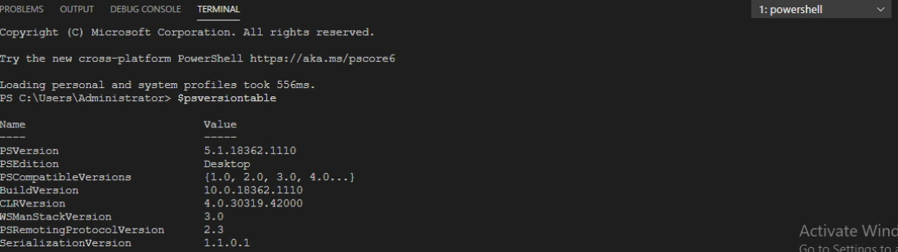
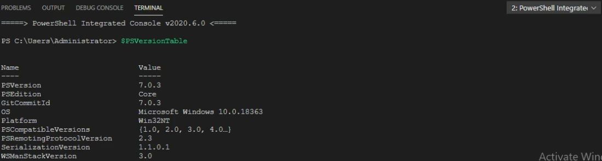
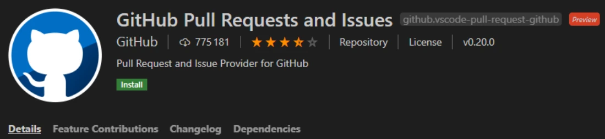
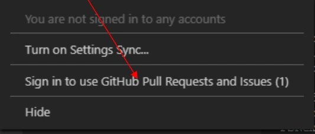

Transcription du support du Drive. Les formulations historiques et les exemples du document sont conservés. Les valeurs d’accès du laboratoire sont indiquées comme « fourni par le formateur ». Les adresses de messagerie personnelles utilisent example.com.
Démonstration 02 du module 5
Visual Stusdio Code est un IDE multiplateforme et gratuit. Fourni par Microsoft, il est adaptable quel que soit le système d’exploitation. De plus, il supporte la plupart des langages, qu’ils soient objet ou non. Il fonctionne sur le principe de modules qui enrichissent les fonctionnalités et la prise en charge des langages. L’objectif de cette démonstration est de vous présenter cet outil.
La première console utilise PowerShell intégré qui est en version 5.1
La seconde utilise la console PowerShell Core qui est version 7.0.3
Tout comme ISE, Visual Studio Code dispose de la gestion des thèmes de couleur, de la coloration syntaxique en fonction des éléments du script ainsi que d’une autocomplétion accessible avec la touche Tabulation.


Il apporte en plus une suite de modules gratuits ou payants incluant de nombreux outils utiles à la gestion des erreurs par exemple ou à l’exécution en parallèle de plusieurs scripts.
Il est également possible de lier le logiciel à un compte GitHub afin de travailler à partir d’un dépôt de scripts personnels en ligne.
Si aucune fenêtre de connexion automatique ne s’ouvre, vous pouvez cliquer en bas à sur cette icône.
Puis cliquer ici pour ouvrir la page de connexion.
Vous pouvez maintenant utiliser votre espace en ligne pour stocker vos scripts et le partager avec d’autres personnes. La plateforme GitHub contient également des centaines de milliers de scripts, de modules d’exemple, de fichiers d’aide, etc.
Voir la procédure fournie par Microsoft pour l’utilisation de GitHub : https://code.visualstudio.com/docs/editor/github
Le formulaire « Sign in to GitHub » demande « Username or email address » et « Password ». L’identifiant et le mot de passe sont fournis par le formateur. Valider avec « Sign in ». « Forgot password? » ouvre la récupération du mot de passe.

